Kitakami
Kitakami · Iwate
Kitakami
Highlighted on the Iwate map.
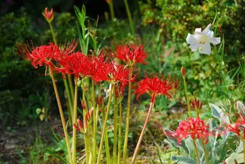
Stay
モンテインホテル
Monteinhoteru
Hotel in Kitakami, Iwate.
【草のホテル】展望風呂×ご当地手作り朝食
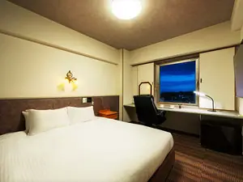
( Kusa No Hoteru ) Tenbou Furo X Go Touchi Tezukuri Choushoku
Hotel in Kitakami, Iwate.
アパホテル〈北上駅西〉
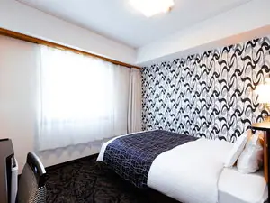
Apahoteru (Kitakami Eki Nishi)
Hotel in Kitakami, Iwate.
ビジネスホテル白百合
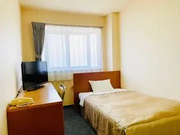
Bijinesuhoteru Shirayuri
Hotel in Kitakami, Iwate.
南部ホテル
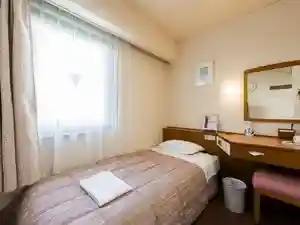
Nanbu Hoteru
Hotel in Kitakami, Iwate.
グリーンホテル北上
Guriinhoteru Kitakami
Hotel in Kitakami, Iwate.
Dining
御料理 寺沢
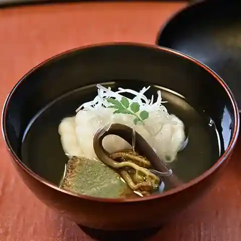
Goryou Ri Terasawa
Japanese restaurant in Kitakami, Iwate.
Ristorante Tremolo
Ristorante Tremolo
Italian restaurant in Kitakami, Iwate.
巓升郭
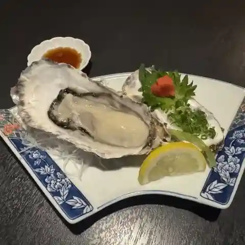
Ten Masu Kaku
Robatayaki grill in Kitakami, Iwate.
鳥ん坊
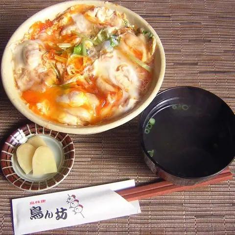
Tori N Bou
Chicken restaurant in Kitakami, Iwate.
魚と酒と飯 マコトヤ
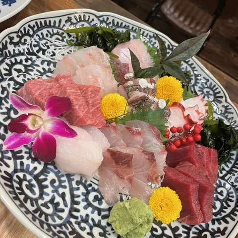
Sakana To Sake To Meshi Makotoya
Izakaya in Kitakami, Iwate.
神楽屋
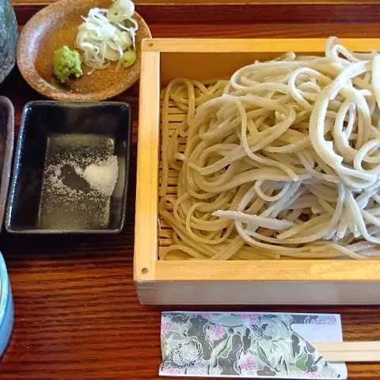
Kagura Ya
Soba restaurant in Kitakami, Iwate.
岩鷲
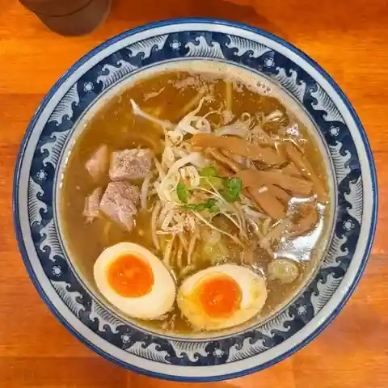
Iwa Washi
Ramen shop in Kitakami, Iwate.
黄金製麺食堂
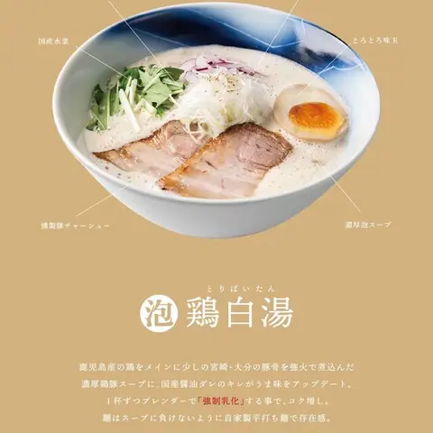
Ougon Seimen Shokudou
Ramen shop in Kitakami, Iwate.
トロイカ
Toroika
Café in Kitakami, Iwate.
フェアリーテール
Feariiteeru
Cake shop in Kitakami, Iwate.
ブールドゥ・ネージュ
Buurudou Neeju
Cake shop in Kitakami, Iwate.
ハックルベリー
Hakkuruberii
Shokudo diner in Kitakami, Iwate.
みちのくラーメン
Michinoku Raamen
Ramen shop in Kitakami, Iwate.
純米濃厚味噌ラーメンばんがり
Junmai Noukou Miso Raamen Bangari
Ramen shop in Kitakami, Iwate.
ビアレストラン アリーブ 北上店
Biaresutoran Ariibu Kitakami Mise
European restaurant in Kitakami, Iwate.
江釣子屋
Ezuriko Ya
Seafood restaurant in Kitakami, Iwate.
ミッシェル 北上店
Misshieru Kitakami Mise
Bakery in Kitakami, Iwate.
スランジバール
Suranjibaaru
Bar in Kitakami, Iwate.
ビストロ felice
Bisutoro Felice
Italian restaurant in Kitakami, Iwate.
晴れる屋
Hare Ru Ya
Ramen shop in Kitakami, Iwate.
麺屋 樫乃木
Men Ya Kashi Nogi
Ramen shop in Kitakami, Iwate.
ヤンセン
Yansen
Ramen shop in Kitakami, Iwate.
深山亭
Miyama Tei
Soba restaurant in Kitakami, Iwate.
カケタ養鶏場直売所
Kaketa Youkei Ba Chokubai Tokoro
Chicken restaurant in Kitakami, Iwate.
Sights
Kitakami Strawberry Farm
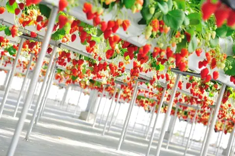
Elevated cultivation allows you to enjoy strawberry picking while standing.
Otsutsumi Park Campsite (Kitakami Sports Park)
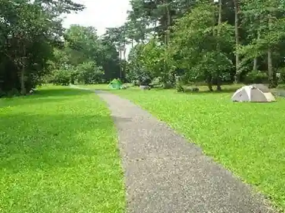
Otsutsumi Park Campsite (Kitakami Sports Park)
Campground Bear Bell
A campsite built by an owner who loves the outdoors and camping.
The Campus: Troika Forest
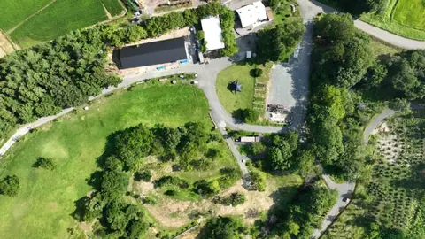
This outdoor complex is located in a vast 15-hectare forest that straddles Kitakami City and Oshu City.
Kitakami Croquettes
Kitakami Croquette, a local B-class gourmet dish from Kitakami City, uses Futako taro, Japanese black beef, white lily pork, and asparagus, all of which are safe and locally produced for local consumption.
Troika
A Russian restaurant located in Kitakami City, founded in 1971.
Kitakami Beef
Kitakami beef is a brand of wagyu beef that Iwate Kitakami is proud of.
Mars Kitakami Theater and Hot Baths
Popular theater and hot springs “Mars Kitakami”
Kikumori Sake Brewery
The company was founded in 1894 as the Fujimura Sake Brewery.
Wagagawa Fureai Square
A park with a vast area located on the Wagagawa riverbed. Hydrangeas and peonies bloom in the park, and you can enjoy a different scenery each season.
Wagagawa Green Park
An outdoor and sports plaza located along the Waga River in Kitakami City.
Iwasawa skunk cabbage colony
The best time to see them is at the same time as the cherry blossoms at the exhibition site every year.
Nyoirinji Temple
This temple is adjacent to the ruins of the Kunimiyama Abandoned Temple, a nationally designated historical site, and is home to many red spider lily flowers.
Tamon-in Izawa Family House
It has a hipped structure with a thatched roof and was designated as a national important cultural property in 1990.
Kitakami Peace Memorial Exhibition Hall
The Kitakami Peace Memorial Exhibition Hall, which opened in 2002, displays military mail sent to Minejiro Takahashi, who was a long-time teacher in the Fujine district of Kitakami City, from a student of a soldier from a rural village, as well as wartime…
Kitakami City Museum (Waga Branch)
In the history corner, you can learn about the entire history from the Paleolithic period to modern times, and there is also a corner to honor our predecessors who contributed to the development of Kitakami.
Kitakami Zazen-so Village
On the east side of Inaba Shrine in the Fujine district of Waga Town, Kitakami City, there is a colony of zazen grass that has been cherished by local residents.
Tachibana Bishamondo
A group of Buddhist statues from the Heian period are enshrined there that tell the story of the Kunimiyama culture of ancient Buddhism.
Kitakami Tourist Products Center “Access”
Kitakami Tourist Products Center “Access”
Tenshochi Rest House
The Tenshochi Rest House is designed in the image of a rice storehouse from the era of boat transport, overlooking the confluence of the Kitakami and Waga rivers.
Mt. Ushigata
The mountainside is covered with beech forests, and the area around the wetlands and marshes is a treasure trove of alpine plants.
Kitakami Yakyoku Monument
The sweet and heartbreaking "Kitakami Yokyoku" was born in 1944.
Swan Wintering Site (Shinzutsumi / Sango Bridge)
Swan flying area (new embankment/Sango Bridge)
Kitakami City Museum (main building)
Reopened in September 2016. In addition to introducing the charm of Kunimiyama Abandoned Temple, which was a center of Buddhist culture prior to Hiraizumi, it also provides detailed explanations of six historical themes that are essential when talking…